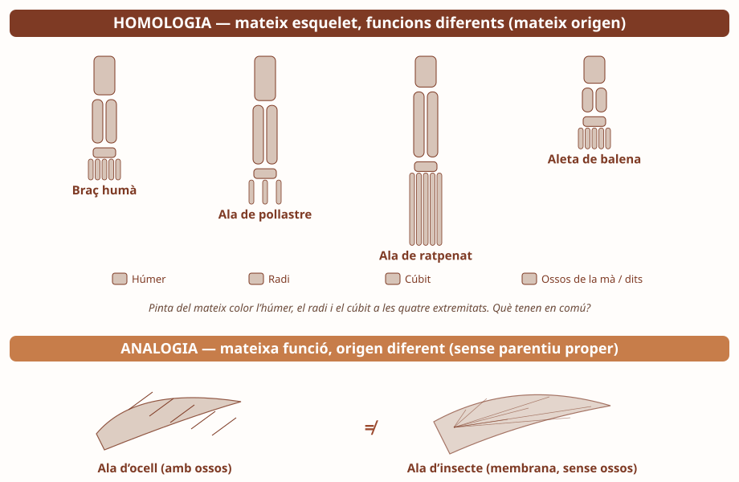
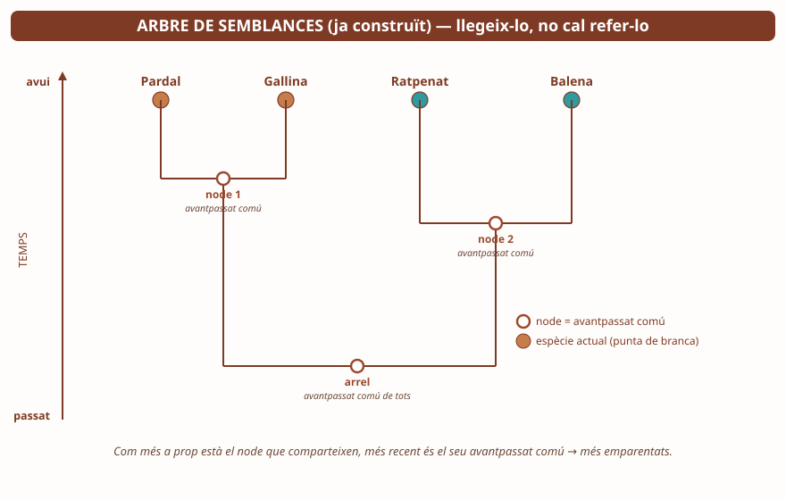

Un dofí i un tauró tenen forma semblant i tots dos neden molt bé. Són parents propers? Per què ho creus?
Si volguessis demostrar que l'home i el ximpanzé són parents, quina PROVA buscaries? On la trobaries?

A dalt, quatre extremitats amb els ossos en gris: pinta'ls. A baix, ala d'ocell vs ala d'insecte.
1a. A la Fig.1, pinta del mateix color l'húmer de les quatre extremitats; d'un altre color el radi; d'un altre el cúbit. Quins ossos es repeteixen a totes?
1b. Els mateixos ossos hi són a l'ala de pollastre i al teu braç. Què vol dir això sobre el seu parentiu? (pista: homologia = avantpassat comú)
2. Compara l'ala d'ocell (amb ossos) amb l'ala d'insecte (membrana). Fan la mateixa funció? S'assemblen per dins? És homologia o analogia? Marca i explica:
3a. Què és una estructura vestigial? Posa'n un exemple (del teu cos o d'un animal):
3b. Omple la graella relacionant organismes del pati amb el tipus de prova:
| Organisme del pati | Amb qui el compararies | Tipus de prova |
|---|---|---|
| Gallina | Pardal (un altre ocell) | |
| Plataner | Auró | |
| Morera | Una altra planta amb flor |
Tipus de prova possibles: anatòmica (ossos/fulles), bioquímica (ADN), paleontològica (fòssils), biogeogràfica (on viu).

Aquest arbre ja està fet: tu només l'has de LLEGIR. Node = avantpassat comú; eix vertical = temps.
4a. Quines dues espècies comparteixen l'avantpassat comú més recent (el node més a dalt)?
4b. El pardal i el ratpenat s'assemblen molt (tots dos volen). Segons l'arbre, estan gaire emparentats? Per què? (pista: mira quin node comparteixen)
1. Explica la diferència entre HOMOLOGIA i ANALOGIA i digues quina demostra parentiu. Posa un exemple de cada.
2. L'ala d'un ratpenat i l'aleta d'una balena tenen els mateixos ossos (húmer, radi, cúbit) tot i que una vola i l'altra neda. Què en podem concloure? (marca)
☐ No es pot dir res: uns mateixos ossos poden aparèixer per casualitat en dos animals qualssevol
☐ Són òrgans vestigials: conserven ossos d'un avantpassat que ja no serveixen per a la funció actual
☐ Són òrgans anàlegs: s'assemblen perquè totes dues línies s'han adaptat a desplaçar-se, no per parentiu
3. A la Fig.3, el pardal i el ratpenat volen tots dos. Per què l'arbre situa el ratpenat més a prop de la balena que del pardal? Quina prova pesa més que «semblar-se per fora»?